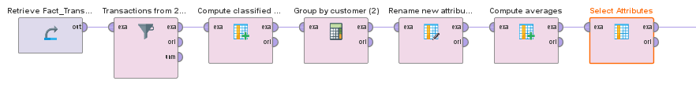

Affinity-based marketing
This exercise is based on one of the cases found in the book "RapidMiner: Data Mining Use Cases and Business Analytics Applications". [1]
A fictional bank introduces a new financial product, a type of account with certain fees and interest rates, different from other pre-existing products. Some customers are drawn to this product and open accounts of that new type sometime after it's released, but others don't. The bank's marketing department wants to sell more of the new account through a direct mail campaign to customers who have not yet opted for it. However, such a marketing campaign requires time and resources, so as not to waste efforts on customers who are unlikely to buy, they would like to target only the 20% of customers who have the highest affinity for the product.
To determine which are the customers who would potentially want to buy the new product, we can assume that the customers who have already purchased it (the buyers) are representative of those who have a great affinity for it. So we can search for customers who have not yet purchased (non-buyers) but who are similar to the buyers in other aspects. We expect that the more similar they are, the greater their affinity will be. Therefore, identifying which of the customers' qualities are indicative of their similarity is going to be one of the main challenges. Then, we can use a machine learning algorithm to generate a ranking of non-buyers by their similarity to buyers, in which those who have higher ranking will be customers predicted as potential new buyers.
Business understanding
The main takeaways that will help us better understand the context of this project are:
- The bank offers 4 types of accounts: CH01, CH02, CH03 and CH04. CH04 is the one that needs to be promoted.
- Each type of account has certain fees and monthly interest rates involved, but some customers recieve special treatment due to their status or other particularities
- A customer can have any number accounts (even zero), and any combination of types
- Accounts have opening and closing dates. A closed account has a balance of 0 and can no longer accept transactions. Opened accounts are considered "active", and a customer with at least one active account is an active customer
- Every transaction is automatically classified based on a form that can be filled by the customer who initiates the transaction. Example of these categories include: cash withdrawals, salaries, and so on.
Data understanding
Now we need to see more carefully what the available data is made up of. The bank has chosen to store this data in a data warehouse with a star schema design, where we have a fact table and several dimension tables (Figure 1).
- Dim_Customers: a row for each customer, includes personal data such as first and last name, date of Birth (as a reference to the Dim_CalendarDates table), occupation, gender, marital status, and income. The "income" attribute is set to zero for young clients, but has many missing values for adults.
- Dim_Accounts: a row for each account, with a reference to the account owner. Each account belongs to one of the four types CH01 through CH04 and has start and end dates (references the Dim_CalendarDates table).
- Dim_CalendarDates: Contains a row for each of the 50,000 days from January 1st, 1900 to November 22nd 2036. One row represents "infinity", which is used as the end date for accounts that do not yet have one. The Date_ID attribute numbers the days conscutively.
- Fact_Transactions: Records all the transactions that have been made in each account. Each transaction includes a reference to the account owner and its date. The credit/debit flag (values CR and DR) indicates whether the money has been deposited or withdrawn from the account.
Compared to real data, this data has been simplified in a number of ways. One of these is that this star schema does not accomodate for slowly changing dimensions, which is a mechanism that enables a way of keeping a "history" of values that change over time. Another simplification is that some customers are grouped together. A customer may represent a married couple, an entire household, or even a corporate entity.
Data preparation
In order to build modelling algorithms from the data, we first need to have a single table of clean data that integrates all 4 of the tables mentioned previously. To do that we will build 3 subprocesses in RapidMiner.
Customer data substream
The first of these substreams focuses on processing the customer table (Figure 2). The main operations performed are:
Account data substream

The second substream focuses on processing the account table (Figure 3). The main operations performed are:
Transaction data substream
The last substream focuses on processing the transaction table (Figure 4). The operations performed are:
References
[1]. Hofmann, M. & Klinkenberg, R. (2014). RapidMiner:
Data Mining Use Cases and Business Analytics Applications